Computer
前言
世界的基础是数学和物理，本文从基本逻辑和基本元件展现数字计算机基本组成
对人类社会而言，物质、能量和信息构成现实世界的三大要素。资源三角形.美国哈佛大学的研究小组
物质：构成宇宙间一切物体的实物和场
能量：促进物质间的作用和运动
信息：信息是物质、能量、信息及其属性的标示
物质
物质按导电能力大小可分为导体、半导体、绝缘体。
| 对象 | 定义 | 作用 |
|---|---|---|
| 导体 | 易于传导电流的物质 | 导引电磁场、组成电路 |
| 半导体 | 导电性可控且范围从绝缘体到导体之间的物质 | 控制电路 |
| 绝缘体 | 难以传导电流的物质 | 保护层、绝缘层 |
半导体
二极管
构成：通常由PN结构成，将P型半导体与N型半导体制作在同一块半导体（通常是硅或锗）基片上
N型半导体：掺入少量杂质磷元素（或锑元素）的硅晶体，多数载流子为自由电子
P型半导体：掺入少量杂质硼元素（或铟元素）的硅晶体，多数载流子为空穴
特点：单向导电性
外接正向电压时，多数载流子运动，表现为导通
外接反向电压时，只有少数载流子的运动，表现为截止，但也有微弱电流
外接反向电压达到一定值，足以破坏化学键时，就会存在击穿现象
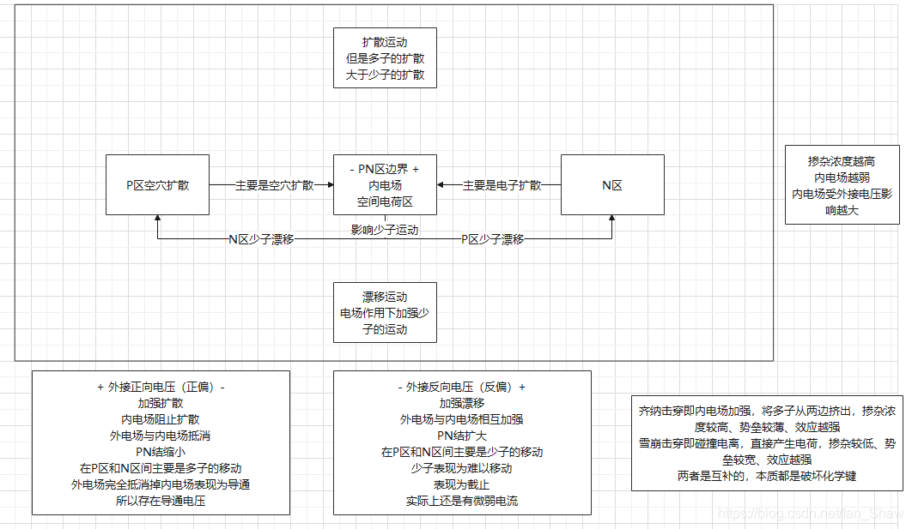
双极型三极管
构成：相当于两个PN结背向串联。发射区的多数载流子浓度大于基区，且基区较薄。
特点：开关特性
通过控制基区控制整个元件的导通
原理：相当于一个PN结正偏，一个PN结反偏。但是，反偏也存在漏电流，本质是少子的运动，通过基区增加少子完成导通
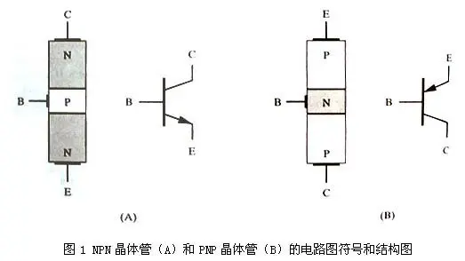
MOS管
构成：相当于两个PN结背向串联，但是栅极和漏极、栅极和源极是绝缘的。
特点：开关特性
通过控制栅极控制整个元件的导通
原理：栅极与衬底形成电场等效一个电容，构成一个导电沟道完成导通。
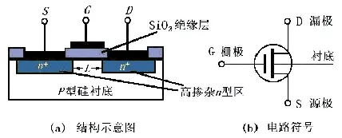
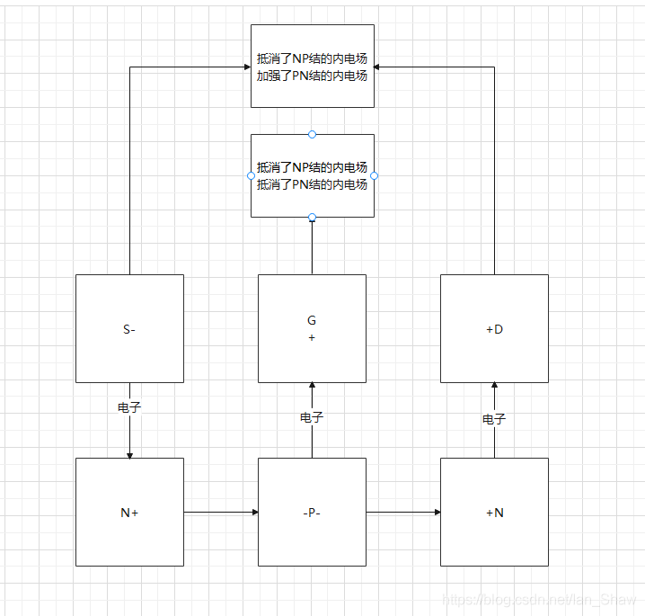
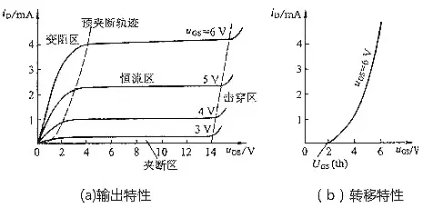
电路
定义：导线和电气、电子部件组成的导电回路
原理：物质运动，具体来说是原子核和电子的运动，属于电磁相互作用
作用：传递能量，存储、传输和处理信息
信息
根据信息表示方式的不同，电路可以分为模拟电路和数字电路
模拟电路直接用电压模拟其他物理量，如模拟声音、温度等
数字电路用高低电平表示两种不同的逻辑状态，如高电平表示1、低电平表示0
信息传输
矩形脉冲信号
基本概念
- 上升沿（正边沿）：脉冲波形由低电位跳变到高电位，反之为下降沿（负边沿）。
- 正跳变：由低电位跳变到高电位的过程，反之为负跳变
- 正脉冲：脉冲出现时的电位比脉冲出现前后的电位值高，反之为负脉冲。
- 脉冲的前沿：脉冲出现。脉冲的后沿：脉冲消失。
- 电平：高电位称为高电平，用 UH表示；低电位称为低电平，用 UL 表示。
产生方法
- 脉冲整形电路：将已有周期性变化波形变换为符合要求的矩形脉冲
- 脉冲波形产生电路：自动产生矩形脉冲
电路结构
| 电路 | 特点 | 原理 |
|---|---|---|
| 斯密特触发电路 | 双稳态且控制状态变换的电平不同 | 正反馈 |
| 单稳态电路 | 暂稳态会自动返回稳态 | RC电路延时性 |
| 多谐振荡电路 | 无稳态 | 深度正反馈 |
信息处理
任何复杂的逻辑运算都可以用基本逻辑运算组合而成，实现基本逻辑运算的电路称为门电路或逻辑门，按功能分为与门、或门、非门、与非门、或非门、与或非门、异或门等
原理：根据不同电路的开关特性，从表示二值逻辑到表示复杂的逻辑
| 电路 | 主要元件 |
|---|---|
| 半导体二极管门电路 | 二极管 |
| CMOS门电路 | mos管 |
| TTL门电路 | 三极管 |
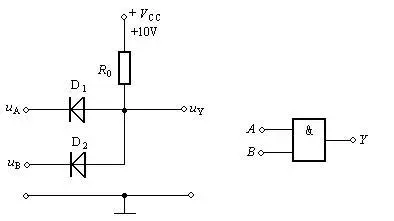
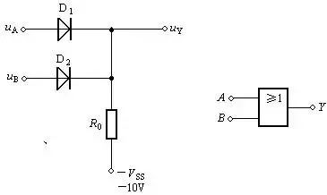
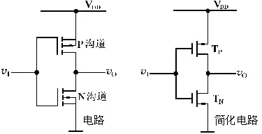
信息存储
只要可以记录二值逻辑就能存储信息，比如早期批处理计算机用纸带输入输出、磁盘用磁通量以及磁阻的变化来分辨二进制中的0或者1。
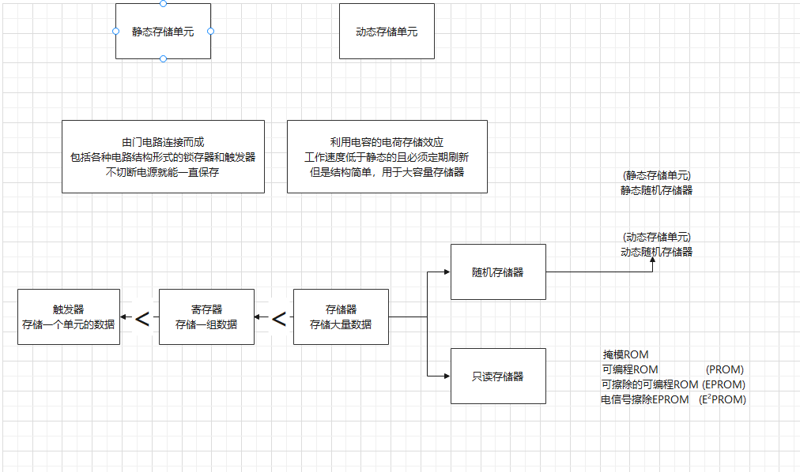
触发器
| 电路 | 特性 |
|---|---|
| SR锁存器 | 存储一位数据 |
| SR触发器 | 增加了触发信号，只有信号到达才能修改触发器状态。双输入信号，所以不可以通过截止瞬间的输入确定输出，S = R = 1时，次态不确定 |
| 脉冲触发的触发器 | 两个SR触发器，异步修改存储内容，仅根据有效电平到达时的输入状态无法确定输出 |
| JK触发器 | 改进的脉冲触发SR触发器成为JK触发器，确定了当 J = K = 1时输出次态 |
| T触发器 | JK触发器的J、K端连接即可形成T端，T = 1时每到达一次时钟信号，状态翻转一次，T = 0时保持不变 |
| Ｄ触发器 | 单输入信号，所以可以通过截止瞬间的输入确定输出 |
| 边沿触发器 | 两个D触发器，提高抗干扰能力，导通时的输出不会改变 |
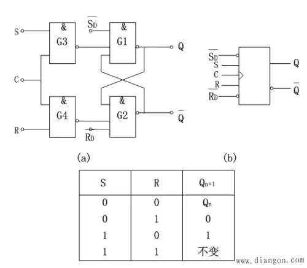
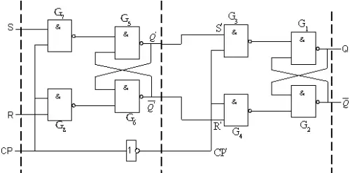
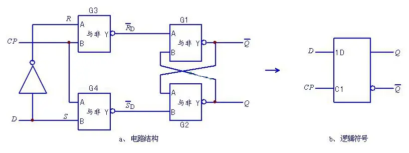
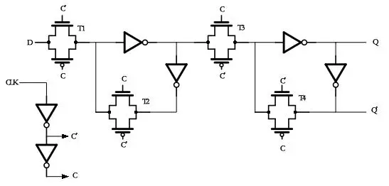
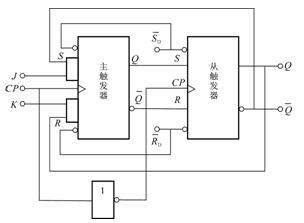
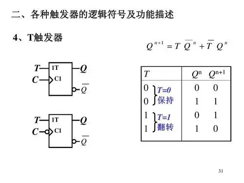
寄存器
触发器的组合
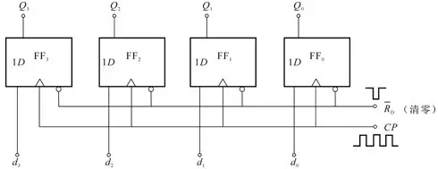
存储器
存储器中给每个存储单元编了地址，只有地址指定的存储单元才能与公共引脚接通
静态随机存储器（SRAM）
通常由存储矩阵、地址译码器、读写控制电路组成
- 存储矩阵由存储单元组成，SR锁存器加门控管
- 地址译码器一般分行地址译码器和列地址译码器，输入地址的若干位分成行或列，选中相应存储单元与读写控制电路接通
- 读写控制电路控制工作状态，R/W’ = 1时读操作，R/W‘ = 0时写操作
- CS’片选输入端控制能否对RAM进行操作
动态随机存储器（DRAM）
利用MOS电容可以存储电荷的原理制成，大容量、高集成度、速度较SRAM慢，需要刷新
通常由存储矩阵、地址译码器、读写控制电路、刷新控制电路组成
- 存储单元为MOS电容
- 刷新控制电路包括刷新操作信号和时钟信号发生器、刷新计数器和行地址数据选择器，按行刷新，逐行计数，刷新时不能读写
只读存储器（ROM）
存储固定不变的、预先写好的数据，正常工作时只能读出不能随时写入或修改
可由将每个存储单元输出接到固定的高电平或低电平实现
通常由存储矩阵、地址译码器、输出缓冲器组成
- 存储单元为二极管、双极型三极管、MOS管等
- 输出缓冲器能提高存储器的带负载能力，实现对输出状态的三态控制，以便与系统总线连接
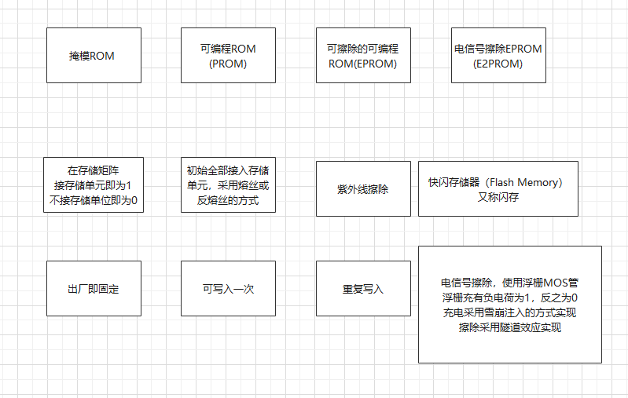
存储器容量的拓展
位拓展方式和字拓展方式
位拓展即代表地址数不变，将相应存储器连接到同一地址线上
字拓展即代表地址数改变，增加地址代码控制选择对应存储器
抽象
信息表示
数字信号是信息的载体，数字电路中数字信号以数码的形式表示。数码表示数量大小时，可以进行算术运算，同时多位数码中每一位的构成方法和从低位到高位的进制规则为数制。数码表示不同事物或相同事物的不同状态时，数码可称为代码，代码的规则称为码制，如ASCII码。
数制
数制的基本属性
基：数制每一位上允许使用的数码个数称为”基”。
权：某数制每一位所具有的值称为”权”。
进制是指进位计数制，一位数码等于或超过基数时就要进位。
基于数制的基本属性就能实现任意数制间的转换
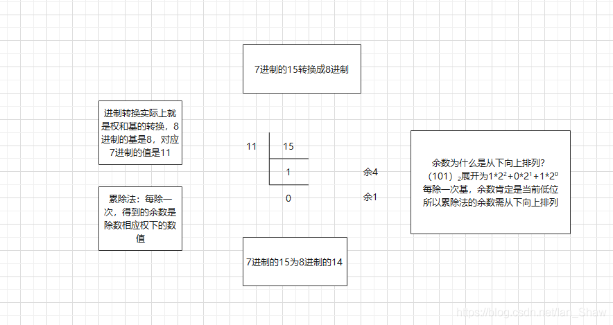
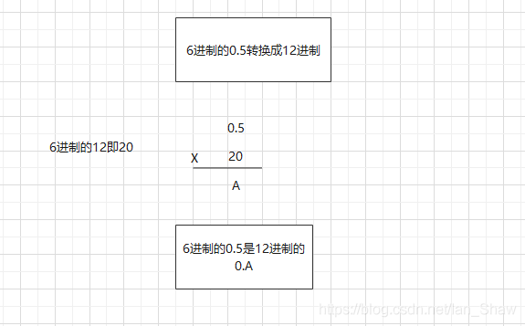
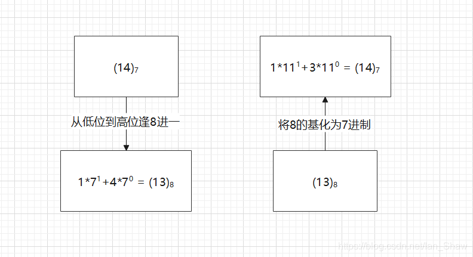
数码
数字电路使用二值逻辑，主要是二进制数码
真值
计算机数值表示中，用正负号加绝对值表示数据的形式被称为“真值”。
原码
相对于真值，符号位用数码表示，数值位不变
反码
原码除符号位外按位取反，原码求补码的过渡码
补码
真值加2^n^（n为总位数）即补码。但是单符号位的补码存在算术溢出问题
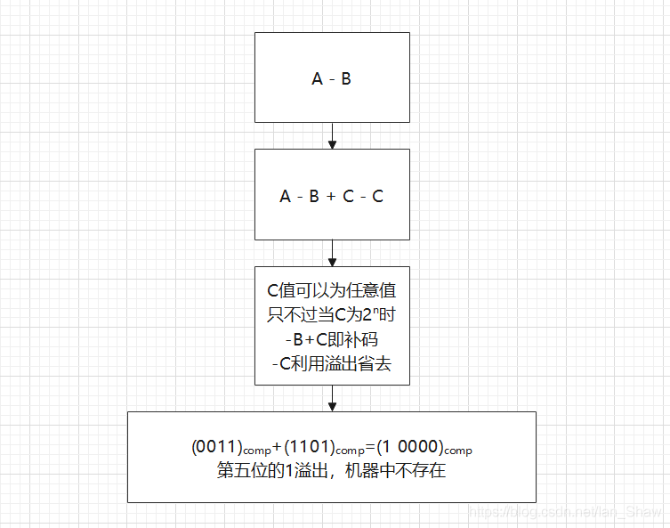
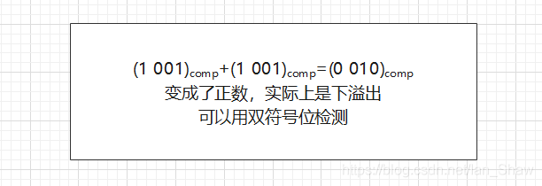
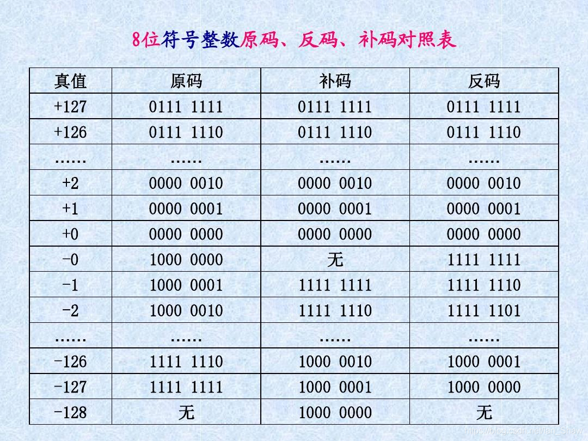
移码
将二进制真值正向平移或加上2^n-1^（n为总位数），即全部转换成无符号数，通常表示阶码，便于比较大小
数据
定点数
数的小数点固定不变(数值位为n)
1、带符号的定点小数：约定所有数的小数点在符号位后，范围-（1-2^-n^）~ 1-2^-n^，通常是原码或补码
2、带符号的定点整数：约定所有数的小数点在最低位后，范围-2^n-1^~2^n-1^，通常是原码或补码
3、无符号的定点整数：范围0~2^n+1^-1，通常是移码
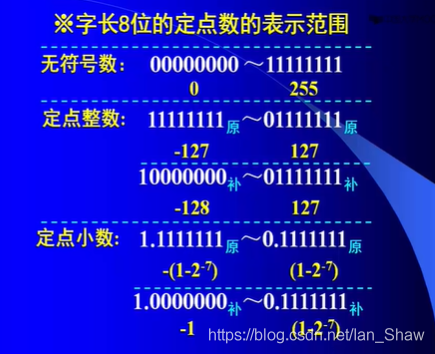
浮点数
小数点的位置可以按需浮动，相同字长较定点数表示范围更大、精度更高
通用格式：阶符+阶码+数符+尾数
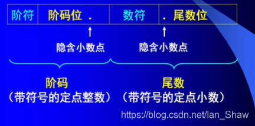
规格化格式：固定尾数，使浮点数表示代码唯一。阶码的精度为1，所以限制尾数在1个偏移内。
原码表示时：1/2 =< |M| < 1 （范围不包括-1、+1）
补码表示时：-1 =< M < -1/2 1/2 =< M < 1 （范围不包括-1/2、+1）
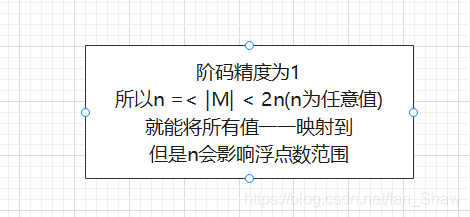
IEEE754标准：阶码用移码表示
float 的阶码8位 数符1位 尾数 23位，并且尾数隐含为1.x，所以范围约3.4e^38^= 2^128^ ，同时23位尾数可以表示的10进制数最大为16,777,216，所以有效位7~8位
double 的阶码11位 数符1位 尾数 52位，所以范围约1.7e^308^= 2^1024^，同时52位尾数可以表示的10进制数最大为9,007,199,254,740,992，所以有效位15~16位
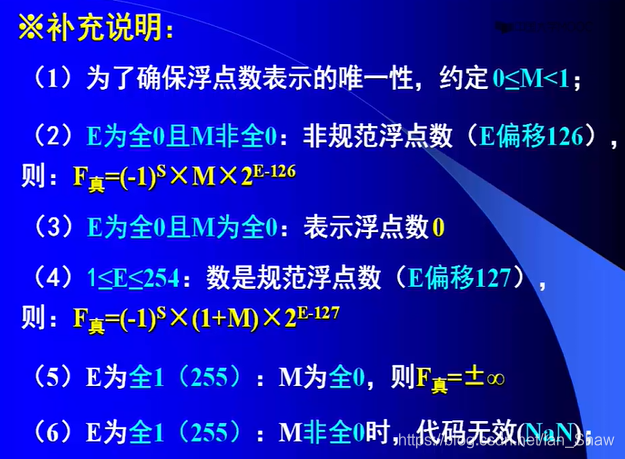
字符型数据
ASCII码：7位有效位+1位奇偶校验位。所以共可以表示128个字符，包括字母、数字、运算符、标点符号、标示符、格式控制符。奇偶校验位是用来简单检测数据传输中是否存在错误，例如，校验位为奇校验位时，当数据有效位中1的个数为奇数时，校验位为1，传输过程中有效位中1的个数变成了偶数，则可通过校验位判断传输发生错误。
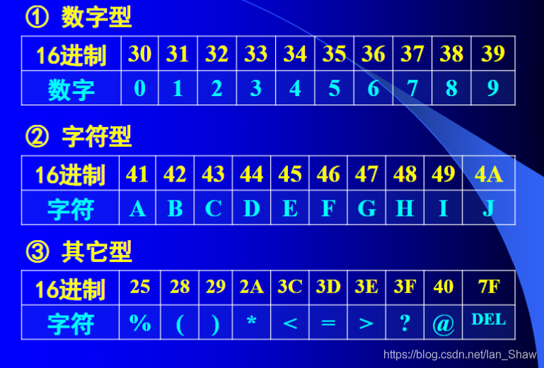
汉字码
输入码：数字码（区位码）、拼音码（拼音输入法）、字形码（五笔输入法）
内码：国标码（通常转换成机内码存储，以和ASCII码区分）、GBK、Unicode
输出码：字模码（将内码转换成点阵，以实现各种字体）
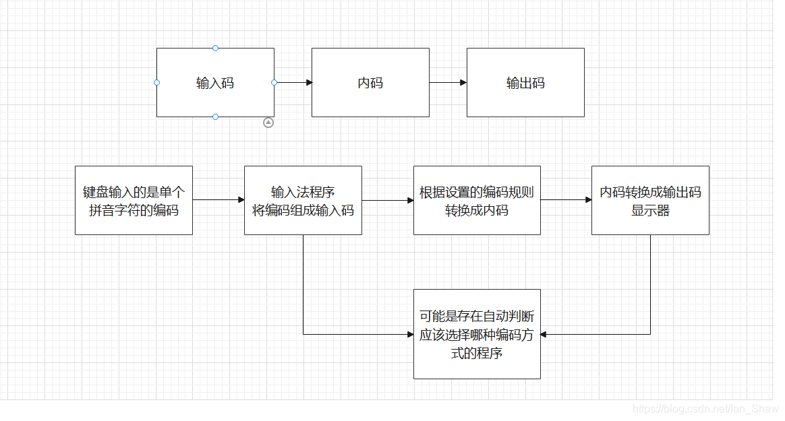
基本操作
- 移位：逻辑移位（循环左移最高位会移动至最低位）、算术移位（相当于乘除2、负数补码移位时在空位补1、如果是双符号位第二符号位要参与移动）
- 舍入：末位恒置1、0舍1入
- 扩展：符号位扩展（符号位为0高位补0，符号位为1高位补1）、0扩展（高位补0，用于无符号数）
- 压缩：弃高位留低位
- 存储：小端模式（小地址单元存储数据低位）、大端模式（大地址单元存储数据低位）
- 字的对齐：按边界对齐（按字存储，读取次数少）、不按边界对齐（按字节存储，存储利用率高）
逻辑代数
分析数字电路逻辑功能的数学方法
基本运算
基本运算包括与、或、非
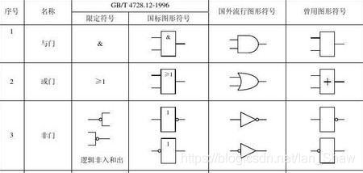
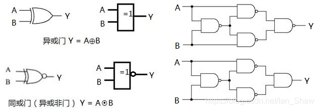
描述方法
包括逻辑真值表、逻辑函数式、逻辑图、波形图
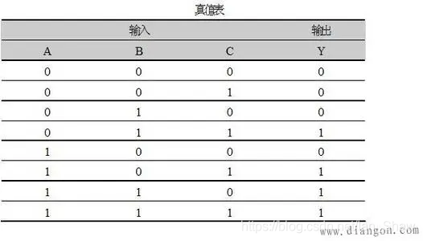
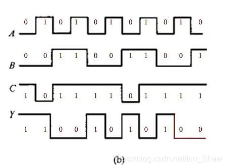
### 逻辑函数式化简方法 #### 标准形式 值为1的最小项之和或值为0的最大项之积。 **最小项性质** 性质是由定义确定的 1. 对于任意一个输入变量有且只有一个最小项为1。 2. 具有相邻性的两个最小项之和可以合并成一项并消去一对因子。 3. 对于输入变量的任何一组取值，任意两个最小项的乘积为0。 4. 对于输入变量的任何一组取值，全体最小项的和为1。 5. 最小项通常用m表示，下标i即最小项编号，将最小项中的原变量用1表示，非变量用0表示，得到的二进制编码转换成十进制，可得到最小项的编号。化简方法
通用卡诺图化简，原理是利用了最小项或最大项的逻辑相邻性.
若存在约束项或任意项可以充当1或0使用.
若对象是多输出逻辑函数则可寻找卡诺图中不同输出间的相同项.
步骤
- 函数化为最小项之和
- 画出卡诺图
- 找出可合并最小项
- 选取化简后的乘积项：覆盖所有最小项、乘积项最少、乘积项包含的因子最少
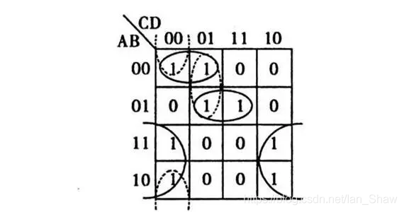
参考资料
- 计算机组成原理
- 数字电路